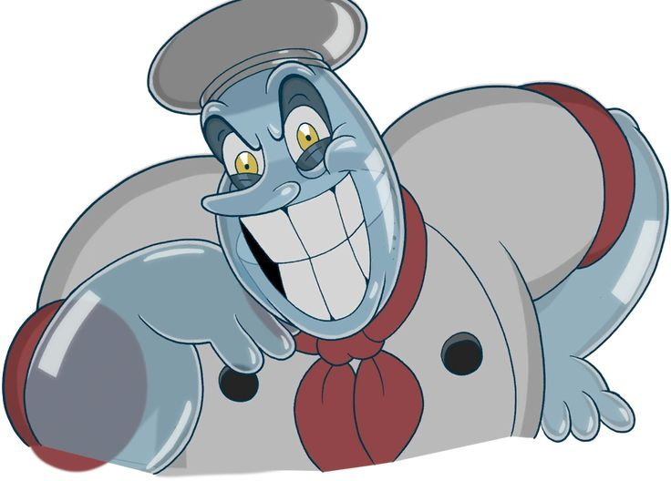
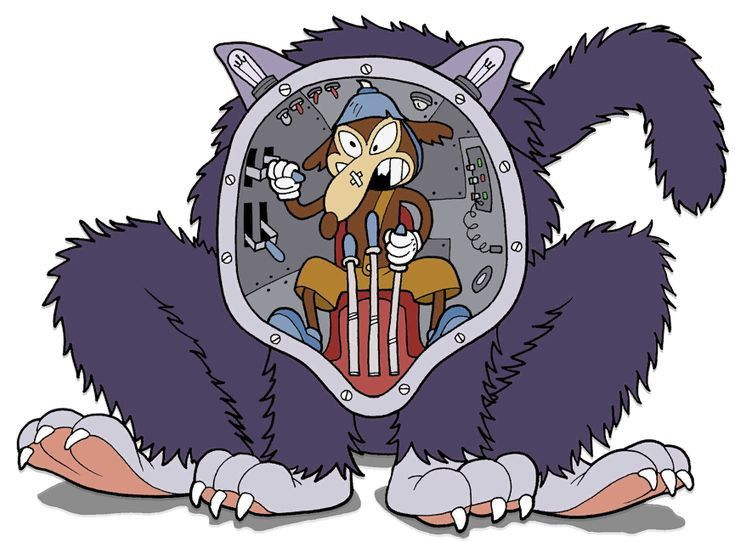
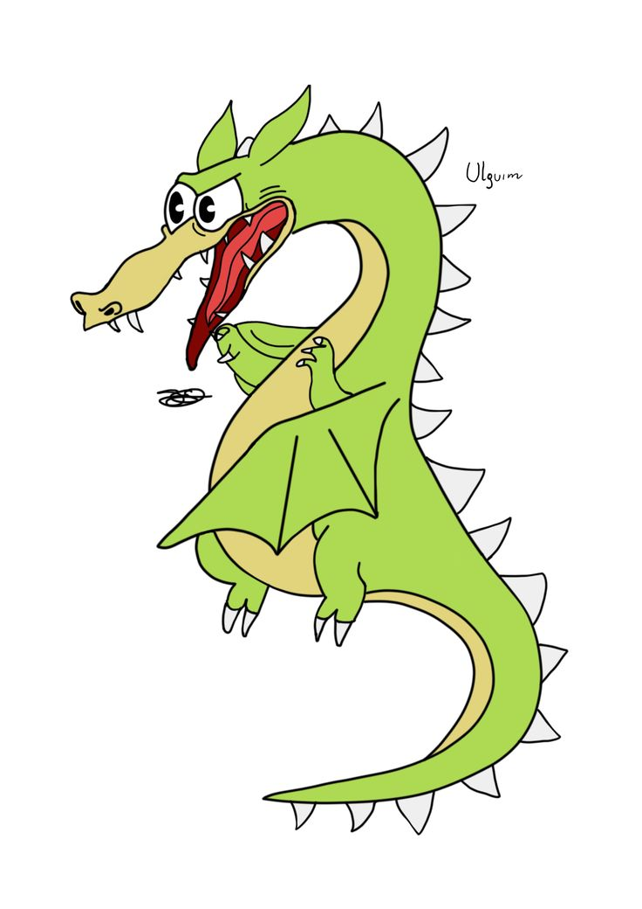

Videojuegos 💖
Juego pocos videojuegos, pero los que más destacan para mí son Cuphead y Rainbow Six.
Cuphead
Este juego es mi obsesión actual. Desde que salió la primera versión me llamó la atención, aunque en ese momento no pude comprarla. Sin embargo, cuando salió la siguiente versión, sí pude adquirirla. Fue difícil vencer a los jefes, pero la verdad es muy adictivo por la manera en que está ambientado. Me encanta su animación, ya que está inspirada en las caricaturas antiguas.
Mis jefes favoritos de este juego son:
- Chef Saltbaker
- Werner Werman
- Fósforo Sombrío



Rainbow Six
Ya no lo juego, pero me sigue gustando, sobre todo por sus personajes.
Los personajes que mas usaba eran:
- Frost
- Twitch
- Ash
- Pulse